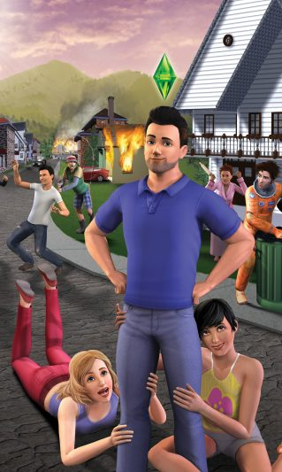

The Sims 3 je igra o simulaciji života iz 2009 godine. Igra je puštena u prodaju samo za Windows i Mekintoš 2. juna 2009 u Severnoj Americi, 4. juna 2009 u Australiji i 5. juna 2009 u Evropi. The Sims 3 za PlayStation 3, Xbox 360, Wii i Nintendo DS, je pušten u prodaju 26. oktobra 2010.
The Sims 3 ima isti koncept kao i prethodnici. Cilj igrača je upravljanje životom Simsa u raznim situacijama. Kao i njegovi prethodnici (The Sims i The Sims 2), tako i The Sims 3 nema definisan cilj igre, i može se igrati večno. The Sims 3 je dostigao veliki uspeh. Prve nedelje prodato je 1,4 miliona primeraka igre.

Sims 3 je igra namenjena jednom igraču, koji kontroliše život pojedinih Simova (virtuelnih ljudi), na sličan način kao i u stvarnom životu. Sve Sim kuće i naselja nalaze se na jednoj jedninstvenoj mapi, tačnije prostranom komšiluku „Dolina zalaska sunca“ (engl. Sunset Valley). Igra se odvija u normalnom vremenu, bez učitavajućih prozora kao što je to bio slučaj sa prve dve igre. Takođe, vreme provedeno u gradu teče isto kao i vreme provedeno kod kuće, što nije bio slučaj sa prethodne dve verzije, kada su Simovi mogli otići u grad i ostati koliko dugo žele bez proticanja vremena u njihovoj kući. Još jedna novina uvedena u igru jeste podjednako starenje sviih Simova u komšiluku. Simovi koji nisu pod kontrolom igrača imaju mogućnost „autonimije“, tj. samostalno jedu, putuju na posao, osnivaju porodicu, idu u grad, unapređuju karijeru, i slično.
Svaki Sim ima određene osobine (tačnije pet nasumice odabranih, ili, u slučaju redovnog ispunjavanja želja Sima, voljom igrača odabranih osobina), koje ih čine onakvima kakvi su. U osnovnoj igri ima ukupno 60 različitih osobina + nekoliko tajnih, koje poseduju samo određeni Simovi.